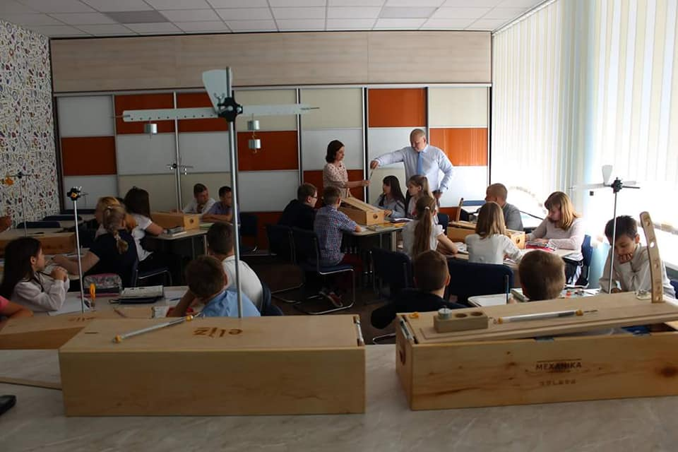

ФІЛОСОФІЯ ШКОЛИ
ЗОШ І-ІІІ ступенів №2 міста Горішні Плавні - неординарна школа, а справжній Другий дім для кожного з учнів. У 2019 році навчальному закладу виповнилося 50 років! 50 років - поважний вік. Але, на перший погляд, мало хто може його помітити у відношенні до нашої альма матері. Чому? Тому що кожен день із прожитих майже 19'000 ми змінювалися, покрашувалися, модернізовувалися, здобували перемоги й переживали поразки... Результатом треба пишатися - ми продовжуємо бути в лідерах! Але які на те причини? Пропонуємо факти до вашої уваги!
- Вчителі школи - гордість міста, області й України. Лише протягом останніх років вчителі здобули багато перемог у реальних професійних конкурсах, у тому числі "Учитель року" на міському, регіональному, навіть всеукраїнському рівнях.
- Учні школи - найактивніші. Вони самі пишуть проекти й грантові заявки, утілюють їх у життя й здобувають реальні перемоги у чесних конкурсах, залучаючи фінансову допомогу в свою діяльність. Перемоги у Громадському Бюджеті міста й інших інвестиційних акціях засвідчують це.
- Результати ЗНО. За рейтингами DOU.ua протягом останніх 5-ти років (2015-2019) школа не полишає перших 1'000 позицій серед 10'000 шкіл України з якості складання ЗНО з фізики, хімії, медичних та ІТ-дисциплін, часто посідаючі позиції в діапазоні ТОП-300 Україна! Ми вдячні вчителям та учням, які прагнуть знань, їх небайдужим батькам.
- Навчальний простір. Матеріально-технічній базі школи позаздрять найкращі ВНЗ України - за це ми вдячні нашим випускникам-спонсорам, які, хоч і досягли величезних успіхів, продовжують пам'ятати про свій рідний навчальний заклад, жителям міста, які наполегливо працюють і сплачують податки, а також міській владі.
- Випусники здобули значні життєві успіхи. Випускники школи підтверджують свої знання і роблять неабиякі успіхи: стають відомими співаками, топ-моделями, ученими, журналістами, генеральними директорами й начальниками великих холдингів, головами міст і сіл; відомі не лише в нашій державі, а і далеко закордоном. Але ми впевнені, що всі випусники віддано працюють на майбутнє України. Ми цінуємо кожного з них!
- Політика демократичності, сердечності, людяності - це наша політика, політика справжньої європейської школи. Учителі та учні регулярно відвідують тренінги, курси в Україні й в інших європейських країнах для того, щоб набратися нових навичок роботи, здобути нових знань та познайомитися із цікавими людьми. Школа була і є ініціатором різних форумів європросвітницького спрямування. Сьогодні ж заклад освіти вбачає потребу у розвитку молодіжного патріотизму. Для цього щодвароки відбирає учнів шкіл України для участі в форумі “Молодь - майбутнє України”. Наші школи-побратими є не лише в Україні, а і закордоном. Загальноосвітній ліцей №2 імені Адама Міцкевича з міста Рацибуж (Республіка Польща) - наш найголовніший закордонний партнер!
Ось такі справи! Долучайтесь до нас у Фейсбуці та в інших соціальних мережах! INSTAGRAM - @sch2.hp E-MAIL - sch2gp@gmail.com YouTube - SCHOOL!FE
